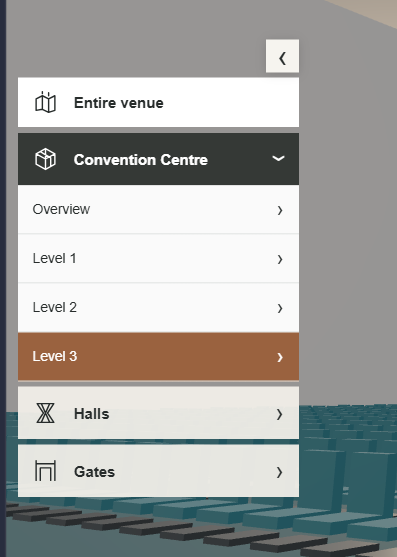
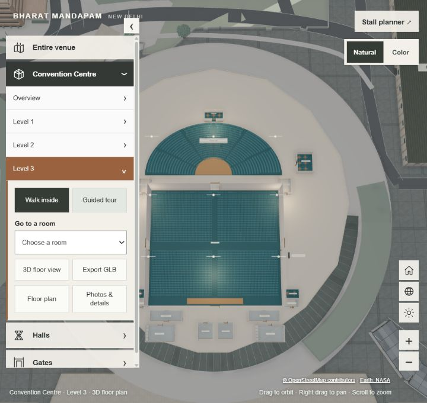
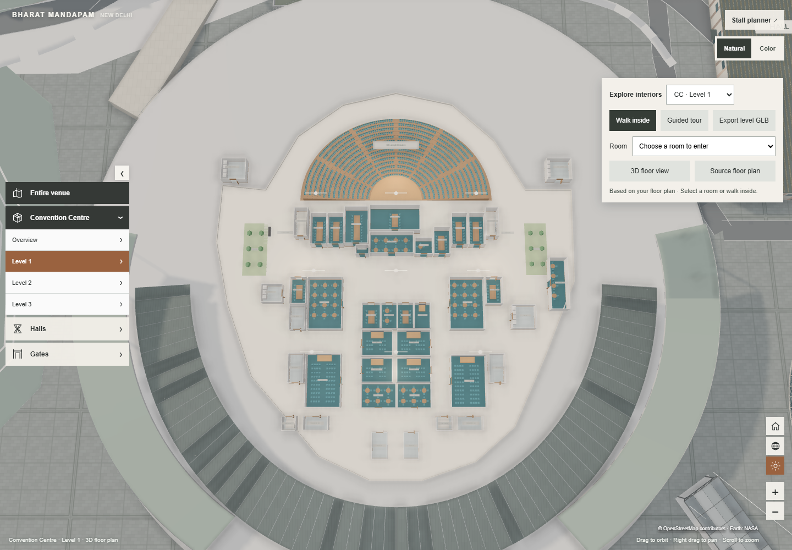
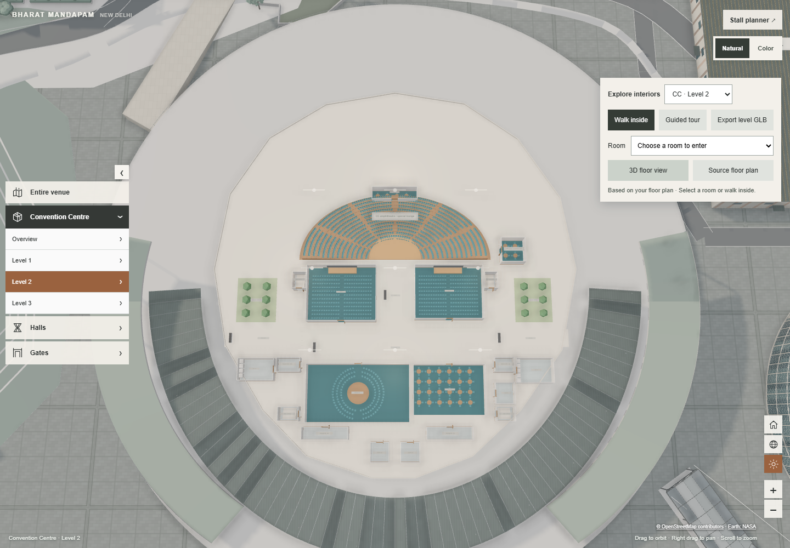
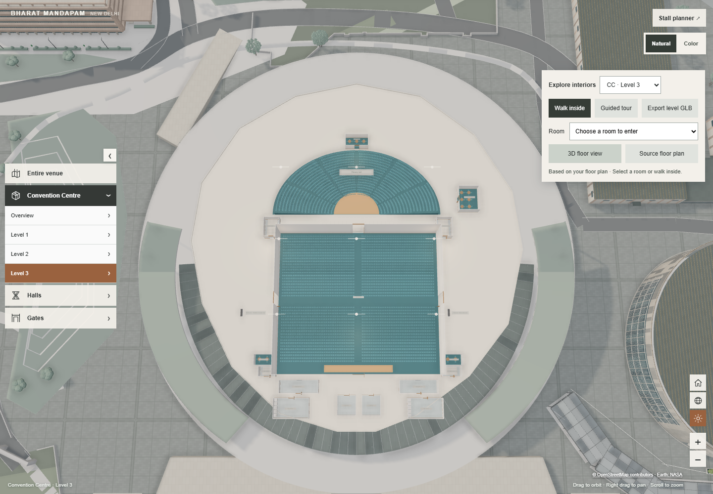
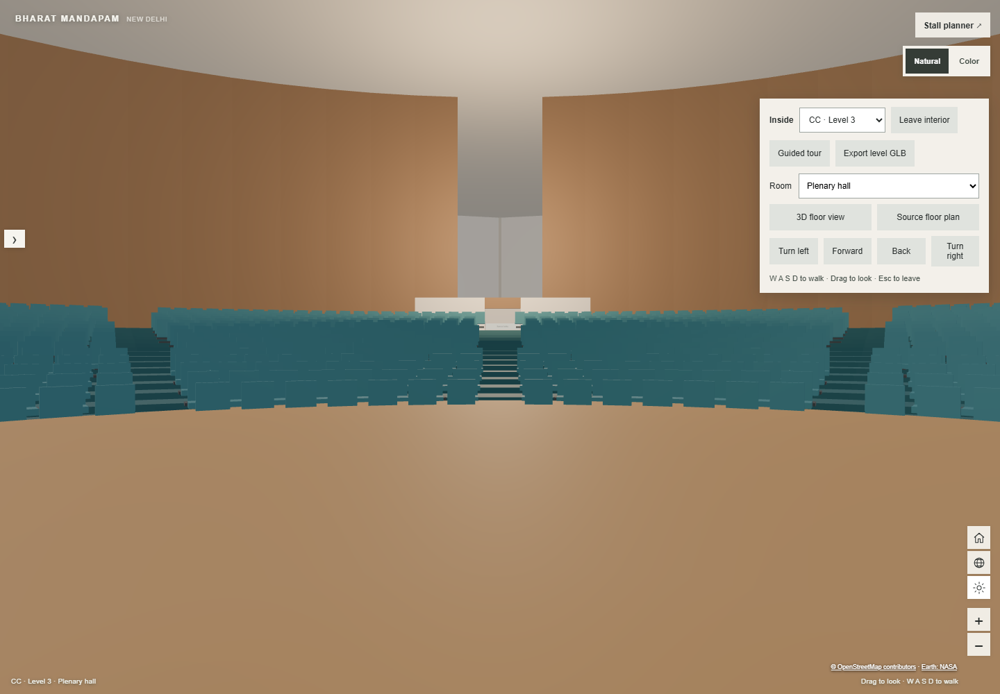

DELIVERY ADDENDUM · 9 OCTOBER 2026
Convention Centre floors, with walkthroughs in their own menu sections
The three supplied floor plans now drive separate CC interior layers fitted to the existing building. Hall walkthroughs sit beneath the selected hall number; CC walkthroughs sit beneath Level 1, 2 or 3. The former floating destination selector has been removed.
Open Convention Centre Level 3 · Original GLB inventory and exhibition-hall before/after views · Earlier geometry record and source hashes
Navigation before and after

Before · supplied menu reference.
After · current Level 3 menu and fitted interior, captured from the running preview.Each available interior offers Walk inside and Guided tour, then pause/resume and Exit walkthrough while active. CC room selection opens a room on that level. Overview, floor plan, photos/details and GLB export remain in the same section. Menu scrolling and collapse support smaller screens; movement keys respect form focus and the floor-plan dialog. Halls without an integrated interior retain exterior/details navigation and show that walkthroughs are unavailable.
What was adapted from each plan
| Source | Interior layout | Existing model fit |
|---|
| CC-level-1.pdf | Meeting-room clusters, MR 1–19 labels, PMR/PBL and numbered private rooms, receptions, amphitheatre, courtyards, service rooms, toilets, stairs and lifts. The source prints MR 16 twice; north and central identifiers distinguish them without inventing a new number. | 116 × 126 model units; floor elevation 6.4. 46 rectangular room/service zones plus the fan-shaped auditorium area. |
| CC-level-2.pdf | Auditoriums 1 and 2, G20 meeting room, leaders lounge, prefunction areas, public and VVIP reception, courtyards, special/VVIP lounges, organiser offices, medical room, toilets, stairs and lifts. | 118 × 128 model units; floor elevation 15. 25 rectangular room/service zones plus the fan-shaped area. |
| CC-level-3.pdf | Plenary hall with tiered fan seating, multi-function hall and stage, side prefunction areas, green rooms, special/VVIP lounges, toilets, stairs, passenger and cargo lifts. | 144 × 154 model units; floor elevation 26.1. 17 rectangular room/service zones plus the plenary fan. |
These PDFs contain raster drawings without a usable dimension scale. Layout proportions and labels are traced and fitted to the incumbent model; wall heights, door widths, room boundaries and furniture are approximations. Seating is illustrative, not certified capacity. This is a navigable visualization, not a surveyed architectural reconstruction. Stairs and lifts are represented visually; changing floors uses the level menu.
Extracted, adapted and newly implemented
Extracted: The original GLB inspection and 13-component library are documented in the linked inventory. CC reuses the extracted reception counter and ceiling fixture with their source materials and UVs. The existing six exhibition interiors continue to use the original nine-component runtime kit.
Adapted: Each CC layer follows its corresponding original floor plate, centre, rotation and elevation. Interior walls have open door gaps; tables, stages, seating banks, glazing, facade linings and columns are fitted around the mapped spaces. Selected-level cutaways reveal the plan, while entering restores overhead and interior linings. Original building assets remain intact and are restored on returning to the venue.
New viewer code: The supplied GLB has no embedded cameras or animations. First-person movement, collision bounds, room entry points, guided camera routes, pause/resume, level isolation, cutaways and menu state are implemented in TypeScript. CC furniture and tier geometry are newly generated to fit these plans rather than claimed as extracted reference geometry. Routes stay on the selected floor; tier elevation adjusts the camera height.
Night and performance: Emissive fixtures and four runtime fill lights illuminate the selected CC level. Only one CC interior is shown at a time. Seating uses instanced meshes and shared geometry/materials; added lights do not create shadow maps. This limits overhead, but performance has not been benchmarked across devices.
Export and editing: CC GLB export includes the selected interior, materials/textures, instanced seating, lights and source/layout metadata. Walkthrough behaviour still requires viewer code. Interior scenery is separate from editable planner stalls and save payloads; decorative chairs and counters do not become editable booking objects.
Interior views
These 3D views were captured before the final navigation relocation. They document the interior geometry and lighting; their floating controls are superseded by the current menu shown above.

Level 1 · room clusters and circulation.

Level 2 · auditoriums, G20 and lounges.

Level 3 · plenary and multi-function hall.

Plenary · evening interior.
Verification status
Before the request to stop tests/builds, CC route geometry and a browser flow covering levels, room visits, tours, source-plan display and GLB export passed. One exported Level 3 GLB was 1,732,368 bytes and contained four lights, textures, room metadata and instanced seating. Earlier exhibition asset and footprint checks also passed. The remaining run was interrupted when the user asked to stop.
No tests, typecheck or build were run after that instruction. The final menu and keyboard changes received code review and a live preview capture, but no automated rerun. The earlier planner persistence check used mocked API responses; a real database save/reload remains unverified.
Implementation: src/app/home/cc-plan-data.ts, cc-interiors.ts, venue-interiors.ts, venue-viewer.ts and the home-page menu/template styles, in the existing codex/bharat-interiors worktree.